Ayuda: Transporte Interno
Módulo Logística | Formulario 5013 – Transporte Interno | tblTransporte
Este manual explica, mediante capturas del sistema, las acciones más frecuentes en el mantenimiento de vehículos utilizados para transporte interno.
- 1. Introducción
- 2. Ingresar un transporte
- 3. Completar los datos del vehículo
- 4. Confirmar el guardado
- 5. Mensaje de guardado exitoso
- 6. Verificar el registro en la tabla
- 7. Consultar transportes
- 8. Utilizar la ventana de consultas
- 9. Revisar resultados filtrados
- 10. Modificar un transporte
- 11. Eliminar un transporte
- Referencia de campos
- Otros botones y recomendaciones
1. Introducción
El mantenimiento de Transporte Interno permite administrar los vehículos utilizados en las operaciones logísticas. Desde esta ventana se registran sus datos generales, se consultan los existentes y se realizan operaciones de modificación y eliminación.
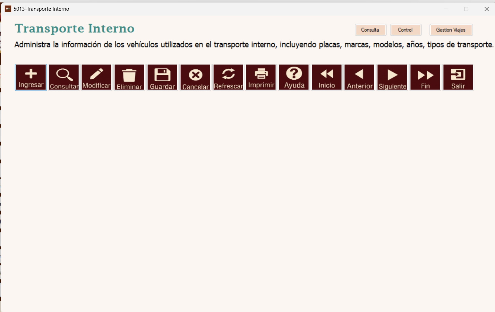
Pantalla de inicio de Transporte Interno.
2. Ingresar un transporte
Presione Ingresar en la barra superior. Se desplegará el formulario de captura de la tabla tblTransporte, mientras el historial permanecerá visible en la parte inferior.
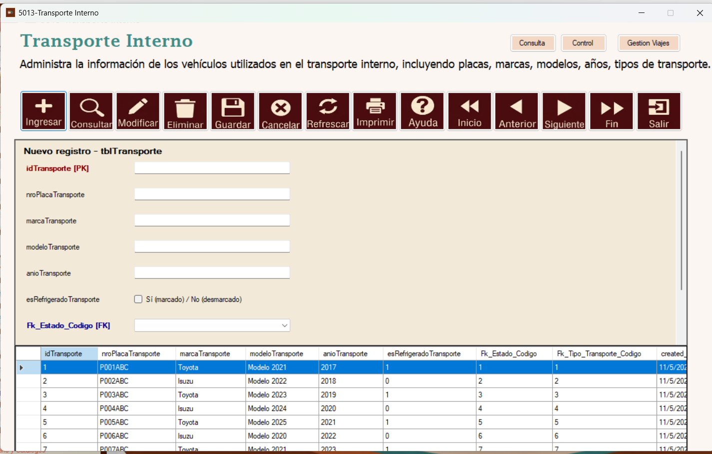
Formulario para registrar un transporte.
3. Completar los datos del vehículo
Ingrese la placa, marca, modelo y año del vehículo. Marque la casilla de refrigeración cuando corresponda. Seleccione el estado y el tipo de transporte en los campos asociados. El identificador idTransporte es la llave primaria; siga el comportamiento que muestre el formulario y no reutilice códigos existentes.
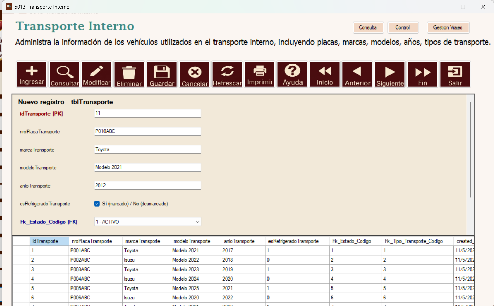
Ejemplo de llenado del registro de transporte.
4. Confirmar el guardado
Una vez verificados los campos, pulse Guardar. El sistema mostrará un cuadro de confirmación con los valores que se registrarán. Seleccione Sí para continuar o No para cancelar la operación.
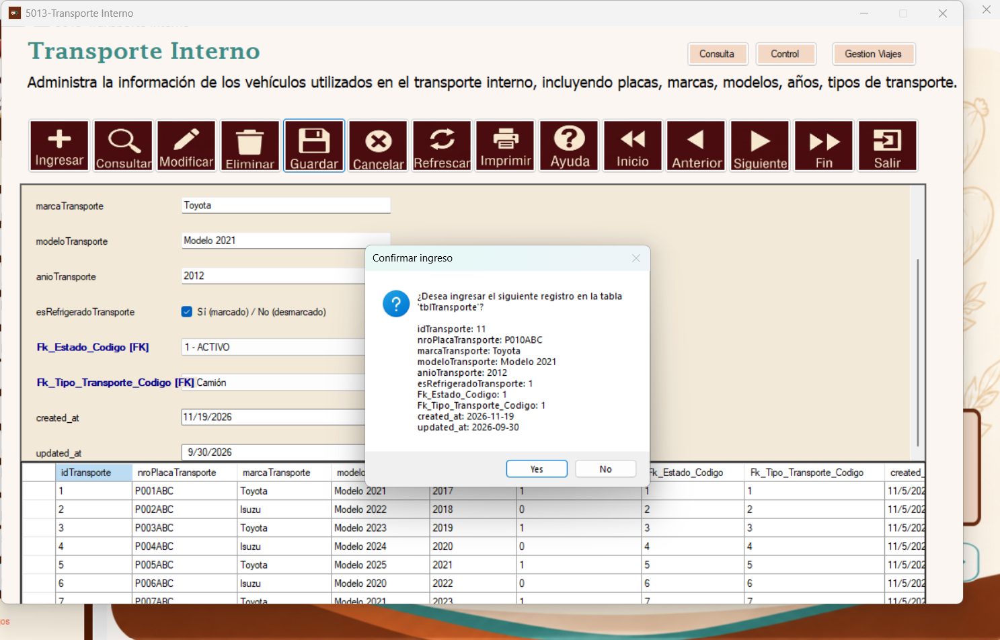
Confirmación de ingreso a tblTransporte.
5. Mensaje de guardado exitoso
Tras confirmar y completar el registro, se muestra el mensaje Registro guardado correctamente. Pulse OK para continuar.
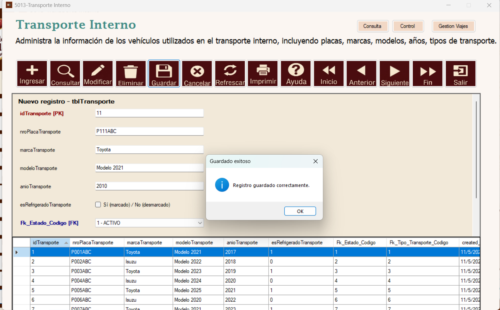
Mensaje de guardado exitoso.
6. Verificar el registro en la tabla
Revise el historial de la parte inferior. El nuevo vehículo debe aparecer con su identificador, placa, marca, modelo, año, indicador de refrigeración y códigos relacionados. La captura muestra el registro de ejemplo incorporado a la tabla.
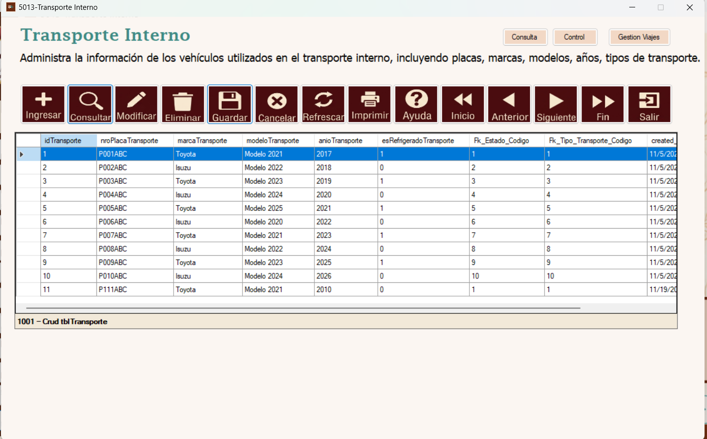
Resultado del nuevo registro en la tabla.
7. Consultar transportes
Para revisar registros existentes, pulse Consultar. El formulario muestra el listado de transportes registrados.
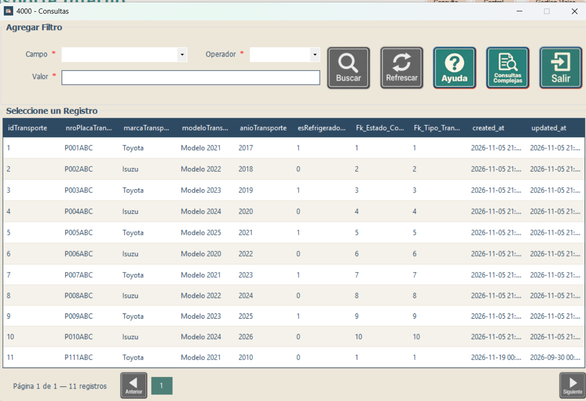
Acceso a la consulta de transportes.
8. Utilizar la ventana de consultas
En la ventana 4000 - Consultas puede seleccionar un Campo, un Operador y un Valor. Utilice Buscar para ejecutar el filtro y Refrescar para actualizar la consulta.
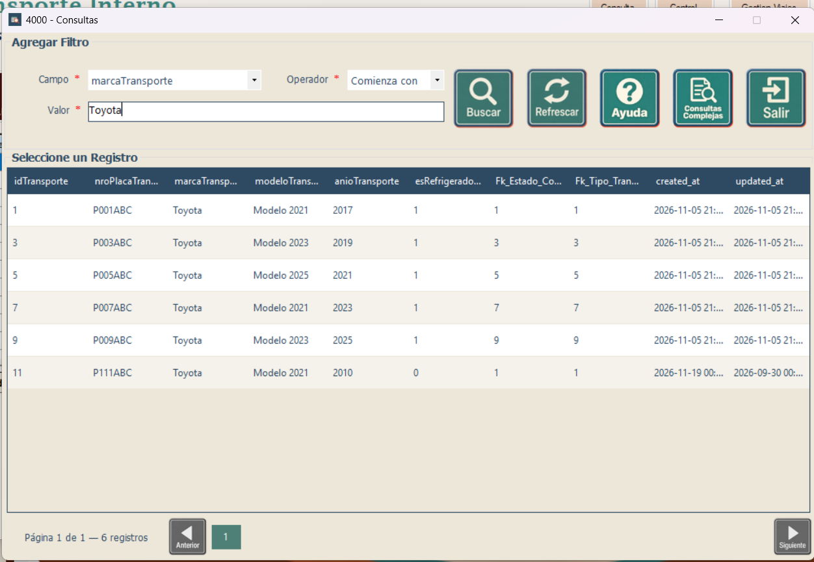
Ventana de consultas y criterios de búsqueda.
9. Revisar resultados filtrados
Por ejemplo, para encontrar vehículos de la marca Toyota, seleccione marcaTransporte, el operador Comienza con e ingrese Toyota. Pulse Buscar y revise los resultados de la tabla inferior.
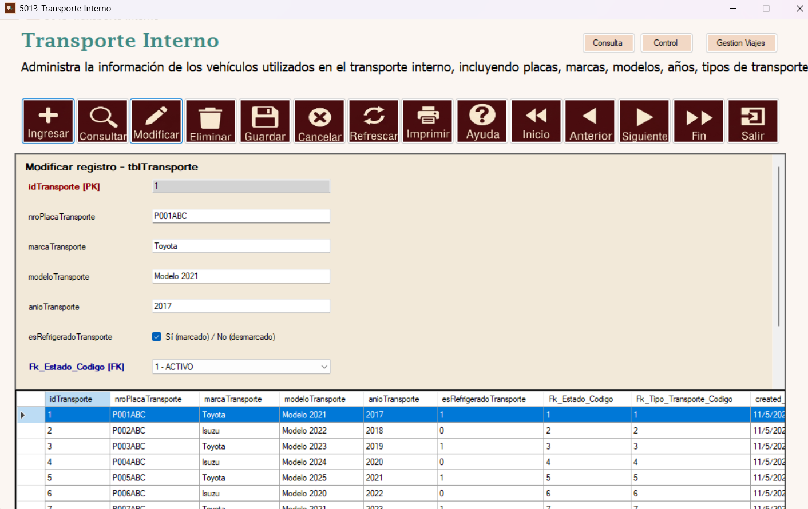
Consulta filtrada por marca Toyota.
10. Modificar un transporte
Seleccione el registro que desea editar en el historial y presione Modificar. Actualice los campos permitidos, mantenga el identificador original y utilice Guardar para aplicar los cambios. Verifique el resultado en la tabla.
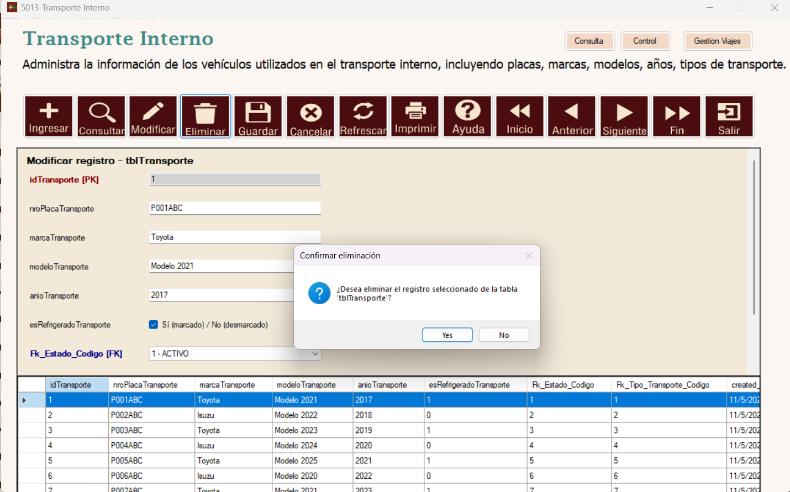
Edición del registro seleccionado.
11. Eliminar un transporte
Seleccione el vehículo y pulse Eliminar. Aparecerá una confirmación: elija Sí únicamente cuando esté seguro o No para conservar el registro. Si el transporte tiene datos relacionados, la base de datos puede impedir su eliminación.
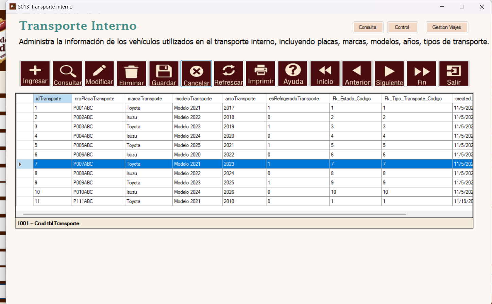
Confirmación previa a eliminar el registro.
12. Referencia de campos
| Campo | Descripción |
|---|---|
idTransporte | Identificador principal del vehículo. |
nroPlacaTransporte | Número de placa del transporte. |
marcaTransporte | Fabricante o marca del vehículo. |
modeloTransporte | Modelo del vehículo. |
anioTransporte | Año del vehículo. |
esRefrigeradoTransporte | Indica si el vehículo dispone de refrigeración. |
Fk_Estado_Codigo | Estado asociado al vehículo. |
Fk_Tipo_Transporte_Codigo | Tipo de transporte asociado al vehículo. |
created_at / updated_at | Fechas de creación y última actualización que mantiene la base de datos. |
13. Otros botones y recomendaciones
Cancelar: abandona la captura o edición en curso. Refrescar: vuelve a cargar el listado. Inicio, Anterior, Siguiente y Fin: permiten recorrer registros. Salir: cierra el mantenimiento.
Imprimir: acceso a la función de impresión disponible en el navegador; su salida depende de la configuración del sistema. Ayuda: abre la documentación del mantenimiento. Los accesos Consulta, Control y Gestión Viajes de la parte superior llevan a funcionalidades relacionadas de Transporte Interno.